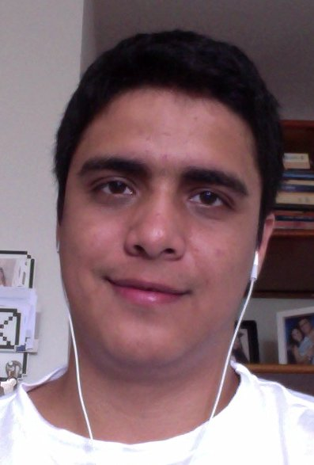

Bem vindo ao Tá Safo Conf 2012!
Serão 2 dias dedicados exclusivamente para o maior evento já organizado pelo Tá Safo! para celebrarmos os 5 anos de vida da Comunidade!
Venha participar deste evento com muita agilidade, desenvolvimento e tecnologia em palestras, workshops, lightning talks e coding dojos!
Programação
A grade de palestras ainda não foi definida! Mas você poderá ver como será o evento!
Em dois dias, além das palestras você poderá participar de workshops, Conding Dojos, Lightning Talks e participar da #horaDoDesapego!
Na #horaDoDesapego você e outros trazem livros que já leram e já tá naquela hora de passar a bola pra frente! Doe e troque seus livros! Há pessoas querendo adotá-los. :)
| Auditório | Sala 1 | Sala 2 | Salão | |
|---|---|---|---|---|
| Dia 1 | ||||
| 8:00 | Credenciamento / Café da Manhã | |||
| 9:00 | Palestra | Exposição | ||
| 9:50 | Palestra | Exposição | ||
| 10:40 | Intervalo | |||
| 11:00 | Palestra | Exposição | ||
| 12:00 | Palestra | Exposição | ||
| 13:00 | Almoço | |||
| 14:00 | Palestra | Dojo/Open Space | Dojo/Open Space | Exposição |
| 14:50 | Palestra | |||
| 15:40 | Palestra | |||
| 16:30 | Intervalo | |||
| 16:50 | Palestra | Exposição | ||
| 18:00 | ||||
| Dia 2 | ||||
| 8:00 | Credenciamento / Café da Manhã | |||
| 9:00 | Palestra | Tutorial / Workshop | Exposição | |
| 9:50 | Palestra | Exposição | ||
| 10:40 | Intervalo | |||
| 11:00 | Palestra | Tutorial / Workshop | Exposição | |
| 12:00 | Palestra | Exposição | ||
| 13:00 | Almoço | |||
| 14:00 | Lightning Talks | Dojo/Open Space | Tutorial / Workshop | Exposição |
| 15:00 | ||||
| 16:00 | Intervalo | |||
| 16:20 | #papoSafo / Encerramento | Tutorial / Workshop | ||
| 18:00 | ||||
Palestrantes
Alexandre MagnoAlexandre Magno é o diretor de AdaptWorks. Ele foi o primeiro Certified Scrum treinador do Brasil e tem acumulado uma vasta experiência em implementar Scrum e outros métodos ágeis para diferentes áreas de negócios, tais como: start-ups, instituições financeiras, agências de marketing, fábricas de software, companhias aéreas e ISVs. Desde 2009, ele aplica o Executive Scrum, uma instância do framework Scrum para ser usado como um padrão para as equipes de gerência executiva e conselhos corporativos. Magno também é um instrutor licenciado para a formação Management 3.0 de Jurgen Appelo. |

Sandro Bezerra |
Jaime SchettiniAtuo há mais de 4 anos com desenvolvimento de software e hoje faço parte do time da Chaordic Systems. Pratico e acredito fortemente nas metodologias ágeis, por achar que elas são o que temos de melhor hoje, pois valorizam as pessoas por trás do software. Tenho a convicção de que precisamos ser, primeiro, melhores pessoas, para depois nos tornarmos melhores profissionais. |

Marcos VeníciosProfessor Universitário, Engenheiro de Software, Gerente de Projetos e consultor em metologias ágeis |

|
Aldrin LealComo fundador da ingenieux, Aldrin Leal divide seu tempo aprendendo, e fazendo equipes de desenvolvimento trabalharem em sintonia. Além da experiência acumulada em anos de projetos e consultorias, e em busca de melhores resultados, possui uma incrível paixão por conhecer novos paradigmas e aplicá-los para resgatar, ou simplesmente melhorar projetos existentes. Na sua "vida pregressa", pode-se destacar o conhecimento em diversas plataformas, desde o TK-3000 de 1989 até o http://hadoop.apache.org em 2011, sua participação em projetos open source, e projetos em clientes que passam entre Mineração, Serviços, Governo e Telecomunicações. Sua outra grande paixão é o @belemtransito, um serviço inovador e pioneiro surgido em 2009 e reconhecido publicamente, com várias menções na mídia, e uma comenda de reconhecimento da Prefeitura de Belem. Como referência em inovação, também dedica-se a utilizar o mesmo como experimento em tecnologias mobile, crowdsourcing, e geolocalização. Além disso, seus projetos recentes são o beanstalker permitindo fazer projetos Java serem automatizados em plataformas hospedadas em Nuvem, como oAmazon Elastic Beanstalk (Hospedagem Web), além do Amazon Elastic MapReduce (para Big Data). Em adição ao beanstalker, sua parceria com clientes como a Virtualnet permitiram aumentar a capacidade instalada de sites como o filmow, em particular em uma ordem de 60 vezes, sem prejuízo para a manutenção do mesmo, ao mesmo tempo que se implementou processos para melhorar a qualidade do site. |
Manoel PimentelManoel Pimentel é Coach com 15 anos de experiência na área de TI, onde atuou com Coaching e Training para executivos e times em empresas de diferentes segmentos. É Diretor Editorial da Revista Visão Ágil. Já escreveu sobre Agile e Coaching para portais e revistas do Brasil e exterior e também palestrou em eventos nacionais e internacionais sobre agilidade. Possui as certificações PPC, CEC da SBC/BCI, CSM e CSP da Scrum Alliance e foi um dos pioneiros na utilização e divulgação de métodos ágeis no Brasil. |
Rildo SantosÉ Consultor, Palestrante, Coach, Instrutor e Professor de MBA. Tem mais de 10.000 horas de experiência em projetos de Gestão por Processo, Planejamento Estratégico, Análise de Negócio, Gestão da Inovação, Gestão de Risco, Gestão de Serviços de TI, Governança de TI, Gestão por Processo, Métodos Ágeis (SCRUM, XP, Kanban, Lean, e FDD) e Tecnologia da Informação. Formado em Administração de Empresas, Pós-Graduado Didática do Ensino Superior e Mestrando em Engenharia de Software pela Universidade Mackenzie. Certificações Profissionais: CSM - Certified SCRUM Master, CSPO - Certified SCRUM Product Owner ,SUN Java Certified Instructor , ITIL Foundation e Instrutor Oficial de Cobit Foundation e Cobit Games. |
Caike SouzaCarlos (Caike) Souza trabalha com desenvolvimento de software desde 2006. Atualmente é desenvolvedor na Envylabs, onde divide seu tempo entre projetos de clientes e o desenvolvimento do portal CodeSchool, uma plataforma de aprendizado interativo. Possui experiência em diversas linguagens e plataformas, tendo dedicado maior parte do seu tempo a Ruby e Rails desde que os conheceu em 2009. |
Edgar SilvaEdgar Silva é Solutions Architect Manager na Red Hat do Brasil, responsável pelo time que define as tecnologias e soluções de Plataforma Linux, Middleware, Virtualização e Cloud Computing no país. Experiente Arquiteto Java e Palestrante em eventos nacionais e internacionais como: JavaOne, JBossWorld, JUDCon e Jazoon. Edgar vem nos últimos tempos pesquisando como combinar vários conceitos computacionais e de negócios para tornar em realidade alguns grandes desafios de clientes. |
|  |
Paulo IgorPaulo Igor é bacharel em Sistemas de Informação, Mestre em Ciência da Computação, trabalha como Engenheiro de Software e Professor Universitário, atualmente é co-fundador do Idopter Labs. que desenvolve serviços para web. Possui mais de 7 anos de experiência no desenvolvimento de software e a 4 anos trabalha com metodologias ágeis auxiliando equipes na adoção de práticas ágeis. |
Fábio AguiarBacharel em Sistemas de Informação e especialista em Engenharia de Processo de Software, com mais de 12 anos de experiência em engenharia e desenvolvimento de software e treinamentos na área de tecnologia da informação. Possui larga experiência com gestão de projetos e desenvolvimento de integração de sistemas de Gestão Empresarial, como TOTVS e SAP, com extensão à Análise de Negócio. Atua como Líder de Projetos com foco em soluções ERP, a participa como Agile Coach. Entusiasta de Gestão e Desenvolvimento Ágil, principalmente a essência e filosofia ágil e membro atuante da comunidade Tá Safo, sempre presente, contribuindo e evangelizando técnicas, metodologias e práticas de desenvolvimento de software focando na entrega de valor constante. |

|
Luiz SanchesTrabalha com desenvolvimento de software e ensino em informática a mais de 10 anos. É graduado em Sistemas de Informação e pós-graduando em Gestão Ágil de Projetos. Atua como desenvolvedor e administrador de sistemas, via home office, para o Instituto Intercidadania em Recife e atacando de Severino na Nômade Tecnologia. Resumindo: pernambucano, paraense, programador, escritor, mochileiro, baixinho, careca e barrigudo. |
Alexandre CardosoBacharel em Ciências da Computação, com mais de 10 anos de experiência em desenvolvimento de software, tendo atuado em vários projetos para desktop/web/mobile, nas áreas de Crédito (private label), Mineração, Medicina do Trabalho, Gestão de Crédito de Fomento, dentre outros. Possui as certificações SCJP 6.0/SCBCD 5.0 (Oracle), PSM I e PSPO I (Scrum.org). Atuou como engenheiro de software, arquiteto de software e líder técnico em vários projetos de médio e grande porte em várias empresas do setor público e privado. Atualmente, trabalha na Concrete Solutions em São Paulo, como Scrum Master em projetos ágeis de grandes empresas, sendo grande incentivador do uso de práticas ágeis e utilização de Scrum para gestão ágil de projetos, sempre focados em qualidade. |
José PapoJosé Papo é Tech Evangelist da Amazon Web Services para a América Latina. Anuncia sempre novidades sobre a Amazon em seu twitter @josepapo e no blog em português da AWS: http://aws.typepad.com/brasil . É desenvolvedor de software e mestre em engenharia da computação. Também atua como professor de pós-graduação na PUC-SP. |
Lightning Talks
Está aberta a chamada de propostas para as Lightning Talks para o Tá Safo! Conf. Será uma rodada de palestras-relâmpago de no máximo 10 minutos, com tema livre. Tudo isso da maneira do Tá Safo! e num ambiente leve e descontraído. Você pode cadastrar sua talk no Call4paperz, mas não esqueça de twittar :). Então, se você gostaria de compartilhar algo conosco, não deixe de cadastrar sua proposta!
Cadastrar TalkInscrições
Ops! As inscrições ainda não estão abertas! Mas não se preocupe que não esqueceremos de você, publicaremos nas redes sociais assim que as inscrições estiverem abertas! Fique ligado!
Patrocine!
Estimativa de 350 pessoas!
Para saber mais sobre como patrocinar o evento, mande um email para tasafoorg@gmail.com
O Tá Safo é uma comunidade originada em Belém no estado do Pará, que vem representando e buscando a integração em toda a região norte do país, atuando fortemente no estado de origem e nas regiões próximas. Hoje a comunidade atua como integradora junto a outras comunidades e grupos da região que estão buscando a inovação, a disseminação do conhecimento e de novas formas de empreender, com o objetivo maior de formação do capital intelectual e elevação da qualidade.
Desde 2009 o Tá Safo vem promovendo vários eventos, incluindo alguns nacionalmente conhecidos como o Maré de Agilidade (2009) e o Agile Tour (2011).
Desses um bem representativo e conhecido por todos na comunidade são os encontros do #tasafoemacao, além dos coding dojos, hora do desapego, papo safo, entre outras iniciativas realizadas ao longo desses anos. Nesses eventos e encontros tivemos públicos de até 300 pessoas e esperamos esse ano ultrapassar esse número.
Principais meios de comunicação da comunidade
300 inscritos na lista de discussão500 amigos no Facebook
700 seguidores no twitter @tasafo
1000 visitas mensais no site oficial do Tá Safo!
Todos esses números contam com uma diversidade enorme de pessoas participantes que incluem profissionais, empreendedores, estudantes e todos vivendo em um momento de aquecimento do mercado local com as novas iniciativas do governo, grandes empreendimentos e o surgimento de várias startups (30 mapeadas pela AmazonStartup) que mostram um pouco do momento propício para novas iniciativas e oportunidades na região.
Esse ano o Tá Safo completa 5 anos e por isso será realizado um evento comemorativo que reunirá algumas das ações que a comunidade realizou nesses anos como o #tasafoemacao, #horadodesapego, #papoSafo, lighting talks, palestras, workshops, open spaces, coding dojos e tudo isso em dois dias de evento. O nome do evento e os dias foram escolhidos através de uma enquete feita com todos do Tá Safo que decidiram realizar o Tá Safo Conf 2012 nos dias 9 e 10 de junho de 2012.
O objetivo desse evento não é só comemorar essa jornada de 5 anos, mas consolidar todo esse movimento e o momento que a comunidade e a região vivem, promovendo o contato entre as pessoas e as empresas que acreditam no potencial da região. Além de oferecer a oportunidade de todos os envolvidos conhecerem o potencial da mão de obra especializada e o enorme mercado inexplorado que existe na região norte.
Conheça mais sobre o Tá Safo Conf 2012 e nossas cotas de patrocínio para participar desse importante momento de forma privilegiada.
Para saber mais sobre como patrocinar o evento, mande um email para tasafoorg@gmail.com
Contato
Você pode manter contato com a organização diretamente por tasafoorg@gmail.com, pelo Twitter @tasafo, pela lista de discussão, ou seja, de qualquer maneira!